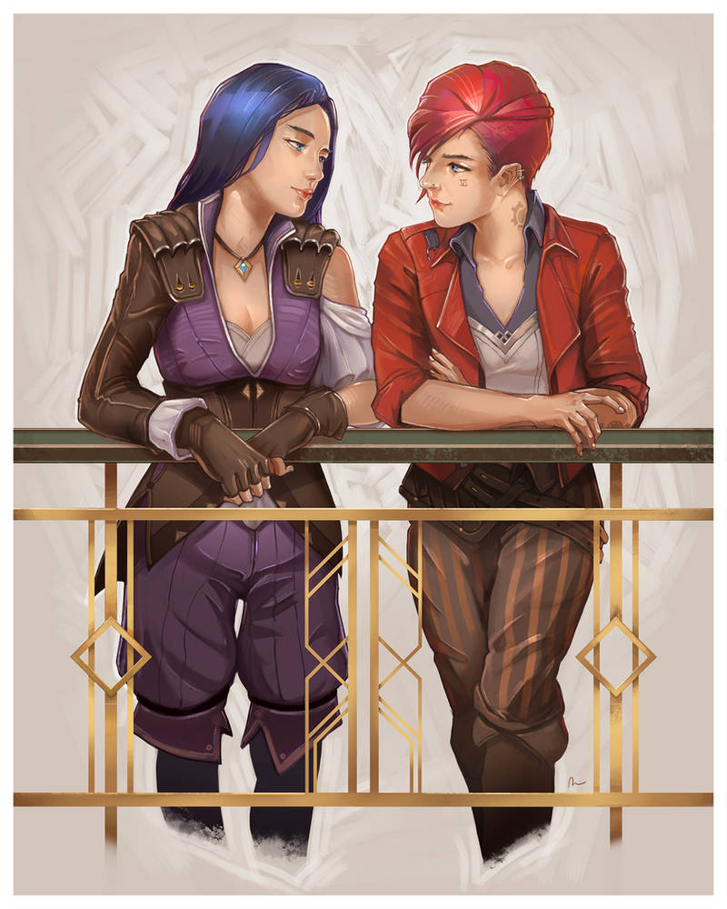

Story
Arcane’s story is an emotional rollercoaster, blending action, conflict, romance, and heartbreak into a compelling narrative. It is well written, giving characters depth and emotional intensity. It is one of those shows that you find yourself rooting for the "villains", and sometimes the heroes are complicated and multi-dimensional. The whole series does not contain any fluff, and it makes sense without any "plot armor" or non-sensical writing.
